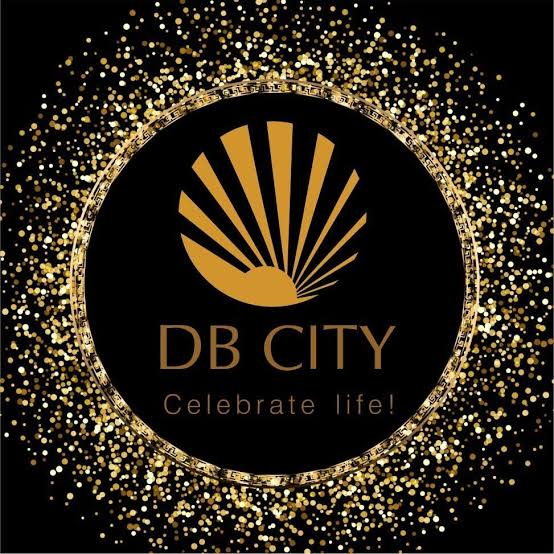

üïí OPENING HOURS
Opening Hour
Monday: 11:00 am - 10:00 pm
Tuesday: 11:00 am - 10:00 pm
Wednesday: 11:00 am - 10:00 pm
Thursday: 11:00 am - 10:00 pm
Friday: 11:00 am - 10:00 pm
Saturday: 11:00 am - 10:00 pm
Sunday: 11:00 am - 10:00 pm
üåè LOCATION
DB Mall, Shop No.T-24, 3rd Floor,
Arera Hills Op MP Nagar, Hoshangabad Road,
Bhopal, Madhya Pradesh - 462011

The Db City Mall is a Biggest complex located in Bhopal,
Madhya Pradesh, Central India. It is situated near ,
Opened in August 2010, it is one of the largest shopping
centers in central India and the first shopping mall in Bhopal.
Shopping Complex
The DB City Mallis a shopping complex in Bhopal, Madhya Pradesh
in the located near Maharana Pratap Nagar. One of the biggest shopping
malls in central India, DB City has over 135 domestic and foreign ,
brands and food and beverage outlets under one roof and spans a
floor area of 13 lac square feet. In August 2010, Bhopal marked
the opening of the city’s first mall. The brands in DB City have
been carefully chosen to give customers the widest range of options
for dining, shopping, and other leisure activities. Recently, the
Courtyard Marriott hotel has been opened here. Over 10 million
people visit the mall each month, and during the holiday season,
that number rises to 18 million (Diwali, Christmas etc.). The
DB Mall is today recognised as the city’s icon and standard
for shopping, entertainment, and leisure activities. DB
City Mall is unquestionably Bhopal’s most well-known retail
destination. Additionally, it has hosted a lot of Bhopal,
promotional events.
Cinema Hall
It currently has a Fun Cinemas-run six-screen multiplex. It has
a grocery store, a gaming area, and shops carrying well-known
brands. In keeping with its motto, “Celebrate Life,” it provides
fantastic deals so that clients can enjoy their shopping experience.
It contains 135 retail stores, five restaurants, a food court, a
15000 square foot family entertainment area, and seven anchor
retailers.
Game Zone
Wanted: fun-loving kids!Your mission
Conquer the exciting games in Timezone and
celebrate your wins with cool prizes from our
prize shop.What can I expect? A family friendly
store filled with the latest arcade games, helpful staff,
a VR Zone, a party space and even massage chairs! (Ideal
for parents whose feet hurt from Dance Revolution…)Any
final words? Foot massages not included!
Kids Birthday Parties